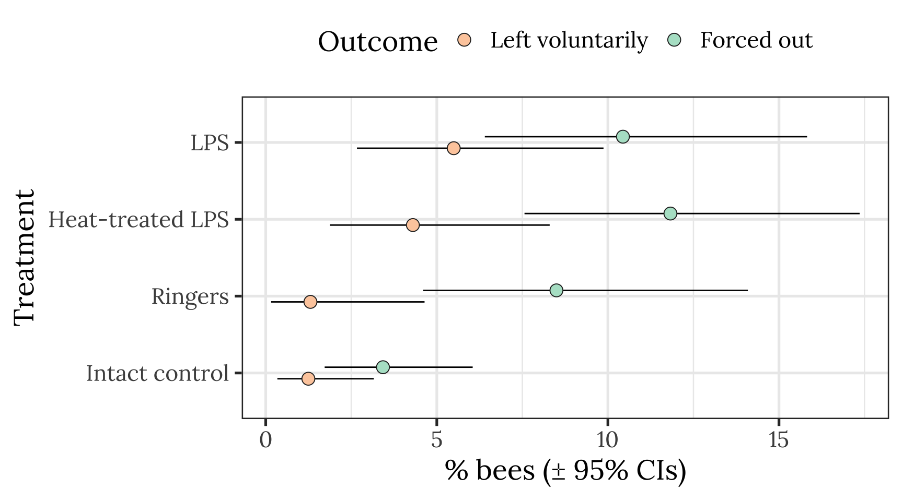
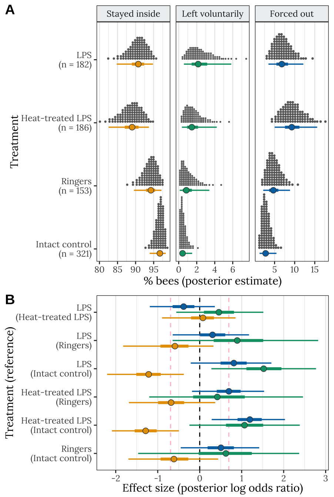

Last updated: 2020-08-21
Checks: 7 0
Knit directory: social_immunity/
This reproducible R Markdown analysis was created with workflowr (version 1.6.2). The Checks tab describes the reproducibility checks that were applied when the results were created. The Past versions tab lists the development history.
Great! Since the R Markdown file has been committed to the Git repository, you know the exact version of the code that produced these results.
Great job! The global environment was empty. Objects defined in the global environment can affect the analysis in your R Markdown file in unknown ways. For reproduciblity it’s best to always run the code in an empty environment.
The command set.seed(20191017) was run prior to running the code in the R Markdown file. Setting a seed ensures that any results that rely on randomness, e.g. subsampling or permutations, are reproducible.
Great job! Recording the operating system, R version, and package versions is critical for reproducibility.
Nice! There were no cached chunks for this analysis, so you can be confident that you successfully produced the results during this run.
Great job! Using relative paths to the files within your workflowr project makes it easier to run your code on other machines.
These are the previous versions of the repository in which changes were made to the R Markdown (analysis/experiment1.Rmd) and HTML (docs/experiment1.html) files. If you’ve configured a remote Git repository (see ?wflow_git_remote), click on the hyperlinks in the table below to view the files as they were in that past version.
| File | Version | Author | Date | Message |
|---|---|---|---|---|
| Rmd | 6fbe4a8 | lukeholman | 2020-08-21 | Resize figure |
| html | 7131f65 | lukeholman | 2020-08-21 | Build site. |
| Rmd | c80c978 | lukeholman | 2020-08-21 | Fix summarise() warnings |
| html | 4f23e70 | lukeholman | 2020-08-21 | Build site. |
| Rmd | c5c8df4 | lukeholman | 2020-08-21 | Minor fixes |
| html | 1bea769 | lukeholman | 2020-08-21 | Build site. |
| Rmd | d1dade3 | lukeholman | 2020-08-21 | added supp material |
| html | 6ee79e9 | lukeholman | 2020-08-21 | Build site. |
| Rmd | 7ec6dde | lukeholman | 2020-08-21 | remake before submission |
| html | 7bf607f | lukeholman | 2020-05-02 | Build site. |
| Rmd | 83fa522 | lukeholman | 2020-05-02 | tweaks |
| html | 3df58c2 | lukeholman | 2020-05-02 | Build site. |
| html | 2994a41 | lukeholman | 2020-05-02 | Build site. |
| Rmd | 9124fb8 | lukeholman | 2020-05-02 | added Git button |
| html | d166566 | lukeholman | 2020-05-02 | Build site. |
| html | fedef8f | lukeholman | 2020-05-02 | Build site. |
| html | 4cb9bc1 | lukeholman | 2020-05-02 | Build site. |
| Rmd | 14377be | lukeholman | 2020-05-02 | tweak colours |
| html | 14377be | lukeholman | 2020-05-02 | tweak colours |
| html | fa8c179 | lukeholman | 2020-05-02 | Build site. |
| Rmd | f188968 | lukeholman | 2020-05-02 | tweak colours |
| html | 2227713 | lukeholman | 2020-05-02 | Build site. |
| Rmd | f97baee | lukeholman | 2020-05-02 | Lots of formatting changes |
| html | f97baee | lukeholman | 2020-05-02 | Lots of formatting changes |
| html | 1c9a1c3 | lukeholman | 2020-05-02 | Build site. |
| Rmd | 3d21d6a | lukeholman | 2020-05-02 | wflow_publish("*", republish = T) |
| html | 3d21d6a | lukeholman | 2020-05-02 | wflow_publish("*", republish = T) |
| html | 93c487a | lukeholman | 2020-04-30 | Build site. |
| html | 5c45197 | lukeholman | 2020-04-30 | Build site. |
| html | 4bd75dc | lukeholman | 2020-04-30 | Build site. |
| Rmd | 12953af | lukeholman | 2020-04-30 | test new theme |
| html | d6437a5 | lukeholman | 2020-04-25 | Build site. |
| html | e58e720 | lukeholman | 2020-04-25 | Build site. |
| html | 2235ae4 | lukeholman | 2020-04-25 | Build site. |
| Rmd | 99649a7 | lukeholman | 2020-04-25 | tweaks |
| html | 99649a7 | lukeholman | 2020-04-25 | tweaks |
| html | 4b72d58 | lukeholman | 2020-04-24 | Build site. |
| Rmd | 67c3145 | lukeholman | 2020-04-24 | tweaks |
| html | 0ede6e3 | lukeholman | 2020-04-24 | Build site. |
| Rmd | a1f8dc2 | lukeholman | 2020-04-24 | tweaks |
| html | a1f8dc2 | lukeholman | 2020-04-24 | tweaks |
| html | 8c3b471 | lukeholman | 2020-04-21 | Build site. |
| Rmd | 1ce9e19 | lukeholman | 2020-04-21 | First commit 2020 |
| html | 1ce9e19 | lukeholman | 2020-04-21 | First commit 2020 |
| Rmd | aae65cf | lukeholman | 2019-10-17 | First commit |
| html | aae65cf | lukeholman | 2019-10-17 | First commit |
# All but 1 of these packages can be easily installed from CRAN.
# However it was harder to install the showtext package. On Mac, I did this:
# installed 'homebrew' using Terminal: ruby -e "$(curl -fsSL https://raw.githubusercontent.com/Homebrew/install/master/install)"
# installed 'libpng' using Terminal: brew install libpng
# installed 'showtext' in R using: devtools::install_github("yixuan/showtext")
library(showtext)
library(brms)
library(bayesplot)
library(tidyverse)
library(gridExtra)
library(kableExtra)
library(bayestestR)
library(tidybayes)
library(cowplot)
source("code/helper_functions.R")
# set up nice font for figure
nice_font <- "Lora"
font_add_google(name = nice_font, family = nice_font, regular.wt = 400, bold.wt = 700)
showtext_auto()
exp1_treatments <- c("Intact control", "Ringers", "Heat-treated LPS", "LPS")
durations <- read_csv("data/data_collection_sheets/experiment_durations.csv") %>%
filter(experiment == 1) %>% select(-experiment)
outcome_tally <- read_csv(file = "data/clean_data/experiment_1_outcome_tally.csv") %>%
mutate(outcome = replace(outcome, outcome == "Left of own volition", "Left voluntarily")) %>%
mutate(outcome = factor(outcome, levels = c("Stayed inside the hive", "Left voluntarily", "Forced out")),
treatment = factor(treatment, levels = exp1_treatments))
# Re-formatted version of the same data, where each row is an individual bee. We need this format to run the brms model.
data_for_categorical_model <- outcome_tally %>%
mutate(id = 1:n()) %>%
split(.$id) %>%
map(function(x){
if(x$n[1] == 0) return(NULL)
data.frame(
treatment = x$treatment[1],
hive = x$hive[1],
colour = x$colour[1],
outcome = rep(x$outcome[1], x$n))
}) %>% do.call("rbind", .) %>% as_tibble() %>%
arrange(hive, treatment) %>%
mutate(outcome_numeric = as.numeric(outcome),
hive = as.character(hive),
treatment = factor(treatment, levels = exp1_treatments)) %>%
left_join(durations, by = "hive") %>%
mutate(hive = C(factor(hive), sum)) # use sum coding for the factor levels of "hive"Click the three tabs to see each table.
sample_sizes <- data_for_categorical_model %>%
group_by(treatment) %>%
summarise(n = n(), .groups = "drop")
sample_sizes %>%
kable() %>% kable_styling(full_width = FALSE)| treatment | n |
|---|---|
| Intact control | 321 |
| Ringers | 153 |
| Heat-treated LPS | 186 |
| LPS | 182 |
data_for_categorical_model %>%
group_by(hive, treatment) %>%
summarise(n = n(), .groups = "drop") %>%
spread(treatment, n) %>%
kable() %>% kable_styling(full_width = FALSE)| hive | Intact control | Ringers | Heat-treated LPS | LPS |
|---|---|---|---|---|
| Garden | 77 | 41 | 34 | 37 |
| SkyLab | 105 | NA | 58 | 43 |
| Zoology | 106 | 80 | 67 | 67 |
| Zoology_2 | 33 | 32 | 27 | 35 |
outcome_tally %>%
select(-colour) %>%
spread(outcome, n) %>%
kable(digits = 3) %>% kable_styling(full_width = FALSE) | hive | treatment | Stayed inside the hive | Left voluntarily | Forced out |
|---|---|---|---|---|
| Garden | Intact control | 75 | 0 | 2 |
| Garden | Ringers | 41 | 0 | 0 |
| Garden | Heat-treated LPS | 34 | 0 | 0 |
| Garden | LPS | 37 | 0 | 0 |
| SkyLab | Intact control | 102 | 3 | 0 |
| SkyLab | Heat-treated LPS | 47 | 6 | 5 |
| SkyLab | LPS | 35 | 6 | 2 |
| Zoology | Intact control | 105 | 0 | 1 |
| Zoology | Ringers | 74 | 1 | 5 |
| Zoology | Heat-treated LPS | 59 | 1 | 7 |
| Zoology | LPS | 60 | 2 | 5 |
| Zoology_2 | Intact control | 24 | 1 | 8 |
| Zoology_2 | Ringers | 23 | 1 | 8 |
| Zoology_2 | Heat-treated LPS | 16 | 1 | 10 |
| Zoology_2 | LPS | 21 | 2 | 12 |
all_hives <- outcome_tally %>%
group_by(treatment, outcome) %>%
summarise(n = sum(n), .groups = "drop") %>%
ungroup() %>% mutate(hive = "All hives")
pd <- position_dodge(.3)
outcome_tally %>%
group_by(treatment, outcome) %>%
summarise(n = sum(n), .groups = "drop") %>% mutate() %>%
group_by(treatment) %>%
mutate(total_n = sum(n),
percent = 100 * n / sum(n),
SE = sqrt(total_n * (percent/100) * (1-(percent/100)))) %>%
ungroup() %>%
mutate(lowerCI = map_dbl(1:n(), ~ 100 * binom.test(n[.x], total_n[.x])$conf.int[1]),
upperCI = map_dbl(1:n(), ~ 100 * binom.test(n[.x], total_n[.x])$conf.int[2])) %>%
filter(outcome != "Stayed inside the hive") %>%
ggplot(aes(treatment, percent, fill = outcome)) +
geom_errorbar(aes(ymin=lowerCI, ymax=upperCI), position = pd, width = 0) +
geom_point(stat = "identity", position = pd, colour = "grey15", pch = 21, size = 4) +
scale_fill_brewer(palette = "Pastel2", name = "Outcome", direction = -1) +
xlab("Treatment") + ylab("% bees (\u00B1 95% CIs)") +
theme_bw(20) +
theme(legend.position = "top",
text = element_text(family = nice_font)) +
coord_flip()
Fit three different multinomial logisitic models, with 3 possible outcomes describing what happened to each bee introduced to the hive: stayed inside, left voluntarily, or forced out by the other workers.
if(!file.exists("output/exp1_model.rds")){
exp1_model_v1 <- brm(
outcome_numeric ~ treatment * hive + observation_time_minutes,
data = data_for_categorical_model,
prior = c(set_prior("normal(0, 3)", class = "b", dpar = "mu2"),
set_prior("normal(0, 3)", class = "b", dpar = "mu3")),
family = "categorical", save_all_pars = TRUE, sample_prior = TRUE,
chains = 4, cores = 1, iter = 5000, seed = 1)
exp1_model_v2 <- brm(
outcome_numeric ~ treatment + hive + observation_time_minutes,
data = data_for_categorical_model,
prior = c(set_prior("normal(0, 3)", class = "b", dpar = "mu2"),
set_prior("normal(0, 3)", class = "b", dpar = "mu3")),
family = "categorical", save_all_pars = TRUE, sample_prior = TRUE,
chains = 4, cores = 1, iter = 5000, seed = 1)
exp1_model_v3 <- brm(
outcome_numeric ~ hive + observation_time_minutes,
data = data_for_categorical_model,
prior = c(set_prior("normal(0, 3)", class = "b", dpar = "mu2"),
set_prior("normal(0, 3)", class = "b", dpar = "mu3")),
family = "categorical", save_all_pars = TRUE, sample_prior = TRUE,
chains = 4, cores = 1, iter = 5000, seed = 1)
posterior_model_probabilities <- tibble(
Model = c("treatment * hive + observation_time_minutes",
"treatment + hive + observation_time_minutes",
"hive + observation_time_minutes"),
post_prob = as.numeric(post_prob(exp1_model_v1,
exp1_model_v2,
exp1_model_v3))) %>%
arrange(-post_prob)
saveRDS(exp1_model_v2, "output/exp1_model.rds") # save the top model, treatment + hive
saveRDS(posterior_model_probabilities, "output/exp1_post_prob.rds")
}
exp1_model <- readRDS("output/exp1_model.rds")
posterior_model_probabilities <- readRDS("output/exp1_post_prob.rds")posterior_model_probabilities %>%
kable(digits = 3) %>%
kable_styling(full_width = FALSE)| Model | post_prob |
|---|---|
| hive + observation_time_minutes | 0.651 |
| treatment + hive + observation_time_minutes | 0.349 |
| treatment * hive + observation_time_minutes | 0.000 |
treatment + hive modelsummary(exp1_model) Family: categorical
Links: mu2 = logit; mu3 = logit
Formula: outcome_numeric ~ treatment + hive + observation_time_minutes
Data: data_for_categorical_model (Number of observations: 842)
Samples: 4 chains, each with iter = 5000; warmup = 2500; thin = 1;
total post-warmup samples = 10000
Population-Level Effects:
Estimate Est.Error l-95% CI u-95% CI Rhat Bulk_ESS Tail_ESS
mu2_Intercept -14.87 9.43 -35.35 2.07 1.00 3184 3682
mu3_Intercept -7.40 6.71 -20.82 5.74 1.00 3803 5169
mu2_treatmentRingers 0.66 0.97 -1.39 2.43 1.00 7765 7010
mu2_treatmentHeatMtreatedLPS 1.30 0.61 0.13 2.53 1.00 8055 6607
mu2_treatmentLPS 1.68 0.60 0.53 2.90 1.00 7548 5867
mu2_hive1 -1.51 2.62 -6.60 3.58 1.00 5464 6272
mu2_hive2 3.13 1.48 0.84 6.62 1.00 3358 3410
mu2_hive3 -1.52 1.60 -4.78 1.56 1.00 4075 5670
mu2_observation_time_minutes 0.09 0.09 -0.07 0.28 1.00 3238 3914
mu3_treatmentRingers 0.55 0.45 -0.34 1.44 1.00 7019 6852
mu3_treatmentHeatMtreatedLPS 1.30 0.41 0.52 2.10 1.00 6949 6552
mu3_treatmentLPS 0.97 0.42 0.16 1.80 1.00 6831 6991
mu3_hive1 -0.39 2.52 -5.31 4.67 1.00 3982 5607
mu3_hive2 -0.12 0.65 -1.39 1.16 1.00 4683 6817
mu3_hive3 -0.76 1.52 -3.83 2.20 1.00 3842 5327
mu3_observation_time_minutes 0.04 0.07 -0.10 0.18 1.00 3821 5170
Samples were drawn using sampling(NUTS). For each parameter, Bulk_ESS
and Tail_ESS are effective sample size measures, and Rhat is the potential
scale reduction factor on split chains (at convergence, Rhat = 1).brms output for Table S1The code chunk below wrangles the raw output of the summary() function for brms models into a more readable table of results, and also adds ‘Bayesian p-values’ (i.e. the posterior probability that the true effect size has the same sign as the reported effect).
Table S1: Table summarising the posterior estimates of each fixed effect in the best-fitting model of Experiment 1. This was a multinomial model with three possible outcomes (stay inside, leave voluntarily, be forced out), and so there are two parameter estimates for the intercept and for each predictor in the model. ‘Treatment’ is a fixed factor with four levels, and the effects shown here are expressed relative to the ‘Intact control’ group. ‘Hive’ was also a fixed factor with four levels; unlike for treatment, we modelled hive using deviation coding, such that the intercept term represents the mean across all hives (in the intact control treatment), and the three hive terms represent the deviation from this mean for three of the four hives. Lastly, observation duration was a continuous predictor expressed to the nearest minute. The \(p\) column gives the posterior probability that the true effect size is opposite in sign to what is reported in the Estimate column, similarly to a \(p\)-value.
tableS1 <- get_fixed_effects_with_p_values(exp1_model) %>%
mutate(mu = map_chr(str_extract_all(Parameter, "mu[:digit:]"), ~ .x[1]),
Parameter = str_remove_all(Parameter, "mu[:digit:]_"),
Parameter = str_replace_all(Parameter, "treatment", "Treatment: "),
Parameter = str_replace_all(Parameter, "HeatMtreatedLPS", "Heat-treated LPS"),
Parameter = str_replace_all(Parameter, "observation_time_minutes", "Observation duration (minutes)")) %>%
arrange(mu) %>%
select(-mu, -Rhat, -Bulk_ESS, -Tail_ESS) %>%
mutate(PP = format(round(PP, 4), nsmall = 4))
names(tableS1)[3:5] <- c("Est. Error", "Lower 95% CI", "Upper 95% CI")
saveRDS(tableS1, file = "figures/tableS1.rds")
tableS1 %>%
kable(digits = 3) %>%
kable_styling(full_width = FALSE) %>%
pack_rows("% bees leaving voluntarily", 1, 8) %>%
pack_rows("% bees forced out", 9, 16)| Parameter | Estimate | Est. Error | Lower 95% CI | Upper 95% CI | PP | |
|---|---|---|---|---|---|---|
| % bees leaving voluntarily | ||||||
| Intercept | -14.866 | 9.431 | -35.346 | 2.072 | 0.0446 | * |
| Treatment: Ringers | 0.658 | 0.970 | -1.395 | 2.433 | 0.2321 | |
| Treatment: Heat-treated LPS | 1.298 | 0.612 | 0.126 | 2.530 | 0.0153 | * |
| Treatment: LPS | 1.681 | 0.602 | 0.532 | 2.902 | 0.0020 | ** |
| hive1 | -1.514 | 2.617 | -6.596 | 3.576 | 0.2808 | |
| hive2 | 3.127 | 1.480 | 0.836 | 6.624 | 0.0012 | ** |
| hive3 | -1.520 | 1.602 | -4.785 | 1.564 | 0.1718 | |
| Observation duration (minutes) | 0.091 | 0.090 | -0.073 | 0.284 | 0.1477 | |
| % bees forced out | ||||||
| Intercept | -7.403 | 6.705 | -20.821 | 5.738 | 0.1341 | |
| Treatment: Ringers | 0.552 | 0.453 | -0.341 | 1.445 | 0.1143 | |
| Treatment: Heat-treated LPS | 1.298 | 0.406 | 0.520 | 2.097 | 0.0004 | *** |
| Treatment: LPS | 0.965 | 0.419 | 0.161 | 1.797 | 0.0113 | * |
| hive1 | -0.394 | 2.523 | -5.315 | 4.675 | 0.4367 | |
| hive2 | -0.115 | 0.654 | -1.392 | 1.160 | 0.4306 | |
| hive3 | -0.762 | 1.518 | -3.826 | 2.200 | 0.3094 | |
| Observation duration (minutes) | 0.038 | 0.068 | -0.095 | 0.176 | 0.2885 | |
get_posterior_preds <- function(focal_hive){
new <- expand.grid(treatment = levels(data_for_categorical_model$treatment),
hive = focal_hive,
observation_time_minutes = 120)
preds <- fitted(exp1_model, newdata = new, summary = FALSE)
dimnames(preds) <- list(NULL, new[,1], NULL)
rbind(
as.data.frame(preds[,, 1]) %>%
mutate(outcome = "Stayed inside the hive", posterior_sample = 1:n()),
as.data.frame(preds[,, 2]) %>%
mutate(outcome = "Left voluntarily", posterior_sample = 1:n()),
as.data.frame(preds[,, 3]) %>%
mutate(outcome = "Forced out", posterior_sample = 1:n())) %>%
gather(treatment, prop, `Intact control`, Ringers, `Heat-treated LPS`, LPS) %>%
mutate(outcome = factor(outcome,
c("Stayed inside the hive", "Left voluntarily", "Forced out")),
treatment = factor(treatment,
c("Intact control", "Ringers", "Heat-treated LPS", "LPS"))) %>%
as_tibble() %>% arrange(treatment, outcome)
}
# plotting data for panel A: one specific hive
plotting_data <- get_posterior_preds(focal_hive = "Zoology")
# stats data: for panel B and the table of stats
stats_data <- get_posterior_preds(focal_hive = NA)cols <- c("#E69F00", "#009E73", "#0072B2")
dot_plot <- plotting_data %>%
left_join(sample_sizes, by = "treatment") %>%
arrange(treatment) %>%
mutate(outcome = str_replace_all(outcome, "Stayed inside the hive", "Stayed inside"),
outcome = factor(outcome, c("Stayed inside", "Left voluntarily", "Forced out")),
treatment = factor(paste(treatment, "\n(n = ", n, ")", sep = ""),
unique(paste(treatment, "\n(n = ", n, ")", sep = "")))) %>%
ggplot(aes(100 * prop, treatment)) +
stat_dotsh(quantiles = 100, fill = "grey40", colour = "grey40") +
stat_pointintervalh(aes(colour = outcome, fill = outcome),
.width = c(0.5, 0.95),
position = position_nudge(y = -0.07),
point_colour = "grey26", pch = 21, stroke = 0.4) +
scale_colour_manual(values = cols) +
scale_fill_manual(values = cols) +
facet_wrap( ~ outcome, scales = "free_x") +
xlab("% bees (posterior estimate)") + ylab("Treatment") +
theme_bw() +
coord_cartesian(ylim=c(1.4, 4)) +
theme(
text = element_text(family = nice_font),
strip.background = element_rect(fill = "#eff0f1"),
panel.grid.major.y = element_blank(),
legend.position = "none"
)
# positive effect = odds of this outcome are higher for trt2 than trt1 (put control as trt1)
get_log_odds <- function(trt1, trt2){
log((trt2 / (1 - trt2) / (trt1 / (1 - trt1))))
}
LOR <- stats_data %>%
spread(treatment, prop) %>%
mutate(LOR_intact_Ringers = get_log_odds(`Intact control`, Ringers),
LOR_intact_heat = get_log_odds(`Intact control`, `Heat-treated LPS`),
LOR_intact_LPS = get_log_odds(`Intact control`, LPS),
LOR_Ringers_heat = get_log_odds(Ringers, `Heat-treated LPS`),
LOR_Ringers_LPS = get_log_odds(Ringers, LPS),
LOR_heat_LPS = get_log_odds(`Heat-treated LPS`, LPS)) %>%
select(posterior_sample, outcome, starts_with("LOR")) %>%
gather(LOR, comparison, starts_with("LOR")) %>%
mutate(LOR = str_remove_all(LOR, "LOR_"),
LOR = str_replace_all(LOR, "heat_LPS", "LPS\n(Heat-treated LPS)"),
LOR = str_replace_all(LOR, "Ringers_LPS", "LPS\n(Ringers)"),
LOR = str_replace_all(LOR, "Ringers_heat", "Heat-treated LPS\n(Ringers)"),
LOR = str_replace_all(LOR, "intact_Ringers", "Ringers\n(Intact control)"),
LOR = str_replace_all(LOR, "intact_heat", "Heat-treated LPS\n(Intact control)"),
LOR = str_replace_all(LOR, "intact_LPS", "LPS\n(Intact control)"))
levs <- LOR$LOR %>% unique() %>% sort()
LOR$LOR <- factor(LOR$LOR, rev(levs[c(3,5,4,2,1,6)]))
LOR_plot <- LOR %>%
mutate(outcome = str_replace_all(outcome, "Stayed inside the hive", "Stayed inside"),
outcome = factor(outcome, levels = rev(c("Forced out", "Left voluntarily", "Stayed inside")))) %>%
ggplot(aes(comparison, y = LOR, colour = outcome)) +
geom_vline(xintercept = 0, linetype = 2) +
geom_vline(xintercept = log(2), linetype = 2, colour = "pink") +
geom_vline(xintercept = -log(2), linetype = 2, colour = "pink") +
stat_pointintervalh(aes(colour = outcome, fill = outcome),
.width = c(0.5, 0.95),
position = position_dodge(0.6),
point_colour = "grey26", pch = 21, stroke = 0.4) +
scale_colour_manual(values = cols) +
scale_fill_manual(values = cols) +
xlab("Effect size (posterior log odds ratio)") +
ylab("Treatment (reference)") +
theme_bw() +
theme(
text = element_text(family = nice_font),
panel.grid.major.y = element_blank(),
legend.position = "none"
)
p <- cowplot::plot_grid(
plotlist = list(dot_plot, LOR_plot),
labels = c("A", "B"),
nrow = 1, align = 'v', axis = 'l',
rel_heights = c(1.4, 1))
ggsave(plot = p, filename = "figures/fig1.pdf", height = 3.4, width = 9)
p
Figure 1: Panel A shows the posterior estimate of the mean % bees staying inside the hive (left), leaving voluntarily (middle), or being forced out (right), for each of the four treatments. The quantile dot plot shows 100 approximately equally likely estimates of the true % bees, and the horizontal bars show the median and the 50% and 95% credible intervals of the posterior distribution. Panel B gives the posterior estimates of the effect size of each treatment, relative to one of the other treatments (the name of which appears in parentheses), and expressed as a log odds ratio (LOR). Positive LOR indicates that the % bees showing this particular outcome is higher in the treatment than the control; for example, more bees left voluntarily (green) or were forced out (orange) in the LPS treatment than in the intact control. The dashed lines mark \(LOR = 0\), indicating no effect, and \(LOR = \pm log(2)\), i.e. the point at which the odds are twice as high in one treatment as the other.
This section calculates the posterior difference in treatment group means, in order to perform some null hypothesis testing, calculate effect size (as a log odds ratio), and calculate the 95% credible intervals on the effect size.
The following code chunks perform planned contrasts between pairs of treatments that we consider important to the biological hypotheses under test. For example the contrast between the LPS treatment and the Ringers treatment provides information about the effect of immmune stimulation, while the Ringers - Intact Control contrast provides information about the effect of wounding in the absence of LPS.
# Helper function to summarise a posterior, including calculating
# p_direction, i.e. the posterior probability that the effect size has the stated direction,
# which has a similar interpretation to a one-tailed p-value
my_summary <- function(df, columns) {
lapply(columns, function(x){
p <- 1 - (df %>% pull(!! x) %>%
bayestestR::p_direction() %>% as.numeric())
df %>% pull(!! x) %>% posterior_summary() %>% as_tibble() %>%
mutate(PP = p) %>% mutate(Metric = x) %>% select(Metric, everything()) %>%
mutate(` ` = ifelse(PP < 0.1, "~", ""),
` ` = replace(` `, PP < 0.05, "\\*"),
` ` = replace(` `, PP < 0.01, "**"),
` ` = replace(` `, PP < 0.001, "***"),
` ` = replace(` `, PP == " ", ""))
}) %>% do.call("rbind", .)
}
# Helper to make one unit of the big stats table
make_stats_table <- function(
dat, groupA, groupB, comparison, metric){
output <- dat %>%
spread(treatment, prop) %>%
mutate(
metric_here = 100 * (!! enquo(groupB) - !! enquo(groupA)),
`Log odds ratio` = get_log_odds(!! enquo(groupA), !! enquo(groupB))) %>%
my_summary(c("metric_here", "Log odds ratio")) %>%
mutate(PP = c(" ", format(round(PP[2], 4), nsmall = 4)),
` ` = c(" ", ` `[2]),
Comparison = comparison) %>%
select(Comparison, everything()) %>%
mutate(Metric = replace(Metric, Metric == "metric_here", metric))
names(output)[names(output) == "metric_here"] <- metric
output
}
stayed_inside_stats_table <- rbind(
stats_data %>%
filter(outcome == "Stayed inside the hive") %>%
make_stats_table(`Heat-treated LPS`, `LPS`, "LPS (Heat-treated LPS)",
metric = "Difference in % bees staying inside"),
stats_data %>%
filter(outcome == "Stayed inside the hive") %>%
make_stats_table(`Ringers`, `LPS`, "LPS (Ringers)",
metric = "Difference in % bees staying inside"),
stats_data %>%
filter(outcome == "Stayed inside the hive") %>%
make_stats_table(`Intact control`, `LPS`, "LPS (Intact control)",
metric = "Difference in % bees staying inside"),
stats_data %>%
filter(outcome == "Stayed inside the hive") %>%
make_stats_table(`Ringers`, `Heat-treated LPS`, "Heat-treated LPS (Ringers)",
metric = "Difference in % bees staying inside"),
stats_data %>%
filter(outcome == "Stayed inside the hive") %>%
make_stats_table(`Intact control`, `Heat-treated LPS`, "Heat-treated LPS (Intact control)",
metric = "Difference in % bees staying inside"),
stats_data %>%
filter(outcome == "Stayed inside the hive") %>%
make_stats_table(`Intact control`, `Ringers`, "Ringers (Intact control)",
metric = "Difference in % bees staying inside")
) %>% as_tibble()
stayed_inside_stats_table[c(2,4,6,8,10,12), 1] <- " "voluntary_stats_table <- rbind(
stats_data %>%
filter(outcome == "Left voluntarily") %>%
make_stats_table(`Heat-treated LPS`, `LPS`,
"LPS (Heat-treated LPS)",
metric = "Difference in % bees leaving voluntarily"),
stats_data %>%
filter(outcome == "Left voluntarily") %>%
make_stats_table(`Ringers`, `LPS`,
"LPS (Ringers)",
metric = "Difference in % bees leaving voluntarily"),
stats_data %>%
filter(outcome == "Left voluntarily") %>%
make_stats_table(`Intact control`, `LPS`,
"LPS (Intact control)",
metric = "Difference in % bees leaving voluntarily"),
stats_data %>%
filter(outcome == "Left voluntarily") %>%
make_stats_table(`Ringers`, `Heat-treated LPS`,
"Heat-treated LPS (Ringers)",
metric = "Difference in % bees leaving voluntarily"),
stats_data %>%
filter(outcome == "Left voluntarily") %>%
make_stats_table(`Intact control`, `Heat-treated LPS`,
"Heat-treated LPS (Intact control)",
metric = "Difference in % bees leaving voluntarily"),
stats_data %>%
filter(outcome == "Left voluntarily") %>%
make_stats_table(`Intact control`, `Ringers`,
"Ringers (Intact control)",
metric = "Difference in % bees leaving voluntarily")
) %>% as_tibble()
voluntary_stats_table[c(2,4,6,8,10,12), 1] <- " "forced_out_stats_table <- rbind(
stats_data %>%
filter(outcome == "Forced out") %>%
make_stats_table(`Heat-treated LPS`, `LPS`,
"LPS (Heat-treated LPS)",
metric = "Difference in % bees forced out"),
stats_data %>%
filter(outcome == "Forced out") %>%
make_stats_table(`Ringers`, `LPS`,
"LPS (Ringers)",
metric = "Difference in % bees forced out"),
stats_data %>%
filter(outcome == "Forced out") %>%
make_stats_table(`Intact control`, `LPS`,
"LPS (Intact control)",
metric = "Difference in % bees forced out"),
stats_data %>%
filter(outcome == "Forced out") %>%
make_stats_table(`Ringers`, `Heat-treated LPS`,
"Heat-treated LPS (Ringers)",
metric = "Difference in % bees forced out"),
stats_data %>%
filter(outcome == "Forced out") %>%
make_stats_table(`Intact control`, `Heat-treated LPS`,
"Heat-treated LPS (Intact control)",
metric = "Difference in % bees forced out"),
stats_data %>%
filter(outcome == "Left voluntarily") %>%
make_stats_table(`Intact control`, `Ringers`, "Ringers (Intact control)",
metric = "Difference in % bees forced out")
) %>% as_tibble()
forced_out_stats_table[c(2,4,6,8,10,12), 1] <- " "Table S2: This table gives statistics associated with each of the contrasts plotted in Figure 1B. Each pair of rows gives the absolute effect size (i.e. the difference in % bees) and standardised effect size (as log odds ratio; LOR) for the focal treatment, relative to the treatment shown in parentheses, for one of the three possible outcomes (stayed inside, left voluntarily, or forced out). A LOR of \(|log(x)|\) indicates that the outcome is \(x\) times more frequent in one treatment compared to the other, e.g. \(log(2) = 0.69\) and \(log(0.5) = -0.69\) correspond to a two-fold difference in frequency. The \(PP\) column gives the posterior probability that the true effect size has the same sign as is shown in the Estimate column; this metric has a similar interpretation to a one-tailed \(p\) value in frequentist statistics.
tableS2 <- bind_rows(
stayed_inside_stats_table,
voluntary_stats_table,
forced_out_stats_table)
saveRDS(tableS2, file = "figures/tableS2.rds")
tableS2 %>%
kable(digits = 2) %>% kable_styling(full_width = FALSE) %>%
row_spec(seq(2,36,by=2), extra_css = "border-bottom: solid;") %>%
pack_rows("% bees staying inside", 1, 12) %>%
pack_rows("% bees leaving voluntarily", 13, 24) %>%
pack_rows("% bees forced out", 25, 36)| Comparison | Metric | Estimate | Est.Error | Q2.5 | Q97.5 | PP | |
|---|---|---|---|---|---|---|---|
| % bees staying inside | |||||||
| LPS (Heat-treated LPS) | Difference in % bees staying inside | 0.98 | 8.09 | -17.01 | 17.18 | ||
| Log odds ratio | 0.05 | 0.43 | -0.90 | 0.85 | 0.4255 | ||
| LPS (Ringers) | Difference in % bees staying inside | -9.54 | 9.87 | -33.80 | 5.35 | ||
| Log odds ratio | -0.62 | 0.54 | -1.82 | 0.33 | 0.1047 | ||
| LPS (Intact control) | Difference in % bees staying inside | -17.27 | 10.86 | -42.03 | -1.89 | ||
| Log odds ratio | -1.23 | 0.46 | -2.21 | -0.38 | 0.0021 | ** | |
| Heat-treated LPS (Ringers) | Difference in % bees staying inside | -10.52 | 9.66 | -31.87 | 5.76 | ||
| Log odds ratio | -0.68 | 0.51 | -1.69 | 0.37 | 0.0840 | ~ | |
| Heat-treated LPS (Intact control) | Difference in % bees staying inside | -18.25 | 10.72 | -40.41 | -2.13 | ||
| Log odds ratio | -1.29 | 0.40 | -2.09 | -0.49 | 0.0021 | ** | |
| Ringers (Intact control) | Difference in % bees staying inside | -7.73 | 8.93 | -29.75 | 4.96 | ||
| Log odds ratio | -0.61 | 0.54 | -1.70 | 0.44 | 0.1158 | ||
| % bees leaving voluntarily | |||||||
| LPS (Heat-treated LPS) | Difference in % bees leaving voluntarily | 3.64 | 6.63 | -5.35 | 22.30 | ||
| Log odds ratio | 0.46 | 0.53 | -0.56 | 1.52 | 0.1919 | ||
| LPS (Ringers) | Difference in % bees leaving voluntarily | 6.27 | 10.01 | -5.24 | 35.00 | ||
| Log odds ratio | 0.95 | 0.90 | -0.64 | 2.82 | 0.1396 | ||
| LPS (Intact control) | Difference in % bees leaving voluntarily | 9.51 | 11.02 | 0.13 | 40.61 | ||
| Log odds ratio | 1.53 | 0.63 | 0.28 | 2.77 | 0.0091 | ** | |
| Heat-treated LPS (Ringers) | Difference in % bees leaving voluntarily | 2.64 | 8.40 | -11.88 | 25.56 | ||
| Log odds ratio | 0.49 | 0.94 | -1.20 | 2.46 | 0.3086 | ||
| Heat-treated LPS (Intact control) | Difference in % bees leaving voluntarily | 5.87 | 8.33 | -0.48 | 30.99 | ||
| Log odds ratio | 1.07 | 0.66 | -0.25 | 2.38 | 0.0546 | ~ | |
| Ringers (Intact control) | Difference in % bees leaving voluntarily | 3.23 | 7.79 | -6.36 | 26.72 | ||
| Log odds ratio | 0.58 | 0.98 | -1.47 | 2.37 | 0.2559 | ||
| % bees forced out | |||||||
| LPS (Heat-treated LPS) | Difference in % bees forced out | -4.62 | 6.30 | -20.93 | 4.80 | ||
| Log odds ratio | -0.39 | 0.39 | -1.19 | 0.36 | 0.1601 | ||
| LPS (Ringers) | Difference in % bees forced out | 3.27 | 6.31 | -7.38 | 19.17 | ||
| Log odds ratio | 0.30 | 0.46 | -0.64 | 1.18 | 0.2446 | ||
| LPS (Intact control) | Difference in % bees forced out | 7.76 | 8.27 | -0.83 | 28.69 | ||
| Log odds ratio | 0.80 | 0.48 | -0.21 | 1.71 | 0.0535 | ~ | |
| Heat-treated LPS (Ringers) | Difference in % bees forced out | 7.88 | 7.87 | -1.34 | 27.16 | ||
| Log odds ratio | 0.69 | 0.44 | -0.18 | 1.53 | 0.0556 | ~ | |
| Heat-treated LPS (Intact control) | Difference in % bees forced out | 12.38 | 10.49 | 0.32 | 36.95 | ||
| Log odds ratio | 1.18 | 0.44 | 0.29 | 2.03 | 0.0078 | ** | |
| Ringers (Intact control) | Difference in % bees forced out | 3.23 | 7.79 | -6.36 | 26.72 | ||
| Log odds ratio | 0.58 | 0.98 | -1.47 | 2.37 | 0.2559 | ||
sessionInfo()R version 4.0.0 (2020-04-24)
Platform: x86_64-apple-darwin17.0 (64-bit)
Running under: macOS Catalina 10.15.4
Matrix products: default
BLAS: /Library/Frameworks/R.framework/Versions/4.0/Resources/lib/libRblas.dylib
LAPACK: /Library/Frameworks/R.framework/Versions/4.0/Resources/lib/libRlapack.dylib
locale:
[1] en_AU.UTF-8/en_AU.UTF-8/en_AU.UTF-8/C/en_AU.UTF-8/en_AU.UTF-8
attached base packages:
[1] stats graphics grDevices utils datasets methods base
other attached packages:
[1] cowplot_1.0.0 tidybayes_2.0.3 bayestestR_0.6.0 kableExtra_1.1.0 gridExtra_2.3 forcats_0.5.0
[7] stringr_1.4.0 dplyr_1.0.0 purrr_0.3.4 readr_1.3.1 tidyr_1.1.0 tibble_3.0.1
[13] ggplot2_3.3.1 tidyverse_1.3.0 bayesplot_1.7.2 brms_2.13.0 Rcpp_1.0.4.6 showtext_0.8-1
[19] showtextdb_2.0 sysfonts_0.8.1 workflowr_1.6.2
loaded via a namespace (and not attached):
[1] TH.data_1.0-10 colorspace_1.4-1 ellipsis_0.3.1 ggridges_0.5.2 rsconnect_0.8.16
[6] rprojroot_1.3-2 estimability_1.3 markdown_1.1 base64enc_0.1-3 fs_1.4.1
[11] rstudioapi_0.11 farver_2.0.3 rstan_2.19.3 svUnit_1.0.3 DT_0.13
[16] fansi_0.4.1 mvtnorm_1.1-0 lubridate_1.7.8 xml2_1.3.2 bridgesampling_1.0-0
[21] codetools_0.2-16 splines_4.0.0 knitr_1.29 shinythemes_1.1.2 jsonlite_1.7.0
[26] broom_0.5.6 dbplyr_1.4.4 shiny_1.4.0.2 compiler_4.0.0 httr_1.4.1
[31] emmeans_1.4.7 backports_1.1.7 assertthat_0.2.1 Matrix_1.2-18 fastmap_1.0.1
[36] cli_2.0.2 later_1.0.0 htmltools_0.5.0 prettyunits_1.1.1 tools_4.0.0
[41] igraph_1.2.5 coda_0.19-3 gtable_0.3.0 glue_1.4.1 reshape2_1.4.4
[46] cellranger_1.1.0 vctrs_0.3.0 nlme_3.1-148 crosstalk_1.1.0.1 insight_0.8.4
[51] xfun_0.15 ps_1.3.3 rvest_0.3.5 mime_0.9 miniUI_0.1.1.1
[56] lifecycle_0.2.0 gtools_3.8.2 MASS_7.3-51.6 zoo_1.8-8 scales_1.1.1
[61] colourpicker_1.0 hms_0.5.3 promises_1.1.0 Brobdingnag_1.2-6 parallel_4.0.0
[66] sandwich_2.5-1 inline_0.3.15 RColorBrewer_1.1-2 shinystan_2.5.0 curl_4.3
[71] yaml_2.2.1 loo_2.2.0 StanHeaders_2.21.0-3 stringi_1.4.6 highr_0.8
[76] dygraphs_1.1.1.6 pkgbuild_1.0.8 rlang_0.4.6 pkgconfig_2.0.3 matrixStats_0.56.0
[81] evaluate_0.14 lattice_0.20-41 labeling_0.3 rstantools_2.1.0 htmlwidgets_1.5.1
[86] processx_3.4.2 tidyselect_1.1.0 plyr_1.8.6 magrittr_1.5 R6_2.4.1
[91] generics_0.0.2 multcomp_1.4-13 DBI_1.1.0 withr_2.2.0 pillar_1.4.4
[96] haven_2.3.1 whisker_0.4 xts_0.12-0 survival_3.1-12 abind_1.4-5
[101] modelr_0.1.8 crayon_1.3.4 arrayhelpers_1.1-0 rmarkdown_2.3 readxl_1.3.1
[106] grid_4.0.0 blob_1.2.1 callr_3.4.3 git2r_0.27.1 threejs_0.3.3
[111] webshot_0.5.2 reprex_0.3.0 digest_0.6.25 xtable_1.8-4 httpuv_1.5.3.1
[116] stats4_4.0.0 munsell_0.5.0 viridisLite_0.3.0 shinyjs_1.1